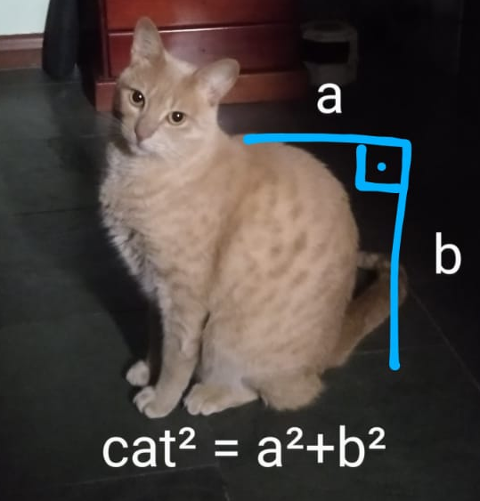

About me
I'm a programmer with a strong aversion to unnecessary complexity, as you can see by the design of this website. Born in 1999, I've been pursuing programming seriously since 2020. I'm currently enrolled in a BSc Mathematics course.
Here's a picture of my cat:
